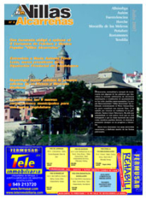

8. Una nueva etapa

Descargar el número 8
del periódico Villas Alcarreñas
(Editorial 8) Julio de 2007
La Mancomunidad Villas Alcarreñas ha formalizado en un Pleno Extraordinario la constitución de su nueva junta directiva y vocales para la Legislatura que acaba de comenzar. Reelegido el Presidente, y premiada la participación y compromiso de Horche con una vicepresidencia, lo más importante es que la Institución sigue siendo regida a partir del diálogo, la profunda sintonía y, a menudo, la unanimidad en las decisiones. Y no puede ser de otra manera, ya que los pueblos mancomunados comparten idénticos problemas, inquietudes, anhelos y necesidades. Avanzando el colectivo, todos nos beneficiamos, porque todos los recursos que se acerquen a la Mancomunidad sirven por igual para el progreso de nuestros pueblos. Ideas, sueños, proyectos todo es bienvenido en el seno de la Mancomunidad. Sólo participando y proponiendo iniciativas lograremos preservar y hacer avanzar nuestros pequeños municipios, hacia el futuro. Estrenamos Ayuntamientos, con mínimos cambios, y contamos con la Diputación. Su nueva presidenta, a quien entrevistamos en la presente edición del periódico, confía absolutamente en la figura de las mancomunidades y prefiere apoyarse en ellas, como instituciones consolidadas, operativas y que conocen como nadie los problemas cercanos a los ciudadanos. Feliz verano, y buenas fiestas a todos.